20190613_PowerAnalysis
Ben Fair
6/13/2019
Last updated: 2019-06-20
Checks: 6 1
Knit directory: Comparative_eQTL/analysis/
This reproducible R Markdown analysis was created with workflowr (version 1.4.0). The Checks tab describes the reproducibility checks that were applied when the results were created. The Past versions tab lists the development history.
The R Markdown file has unstaged changes. To know which version of the R Markdown file created these results, you’ll want to first commit it to the Git repo. If you’re still working on the analysis, you can ignore this warning. When you’re finished, you can run wflow_publish to commit the R Markdown file and build the HTML.
Great job! The global environment was empty. Objects defined in the global environment can affect the analysis in your R Markdown file in unknown ways. For reproduciblity it’s best to always run the code in an empty environment.
The command set.seed(20190319) was run prior to running the code in the R Markdown file. Setting a seed ensures that any results that rely on randomness, e.g. subsampling or permutations, are reproducible.
Great job! Recording the operating system, R version, and package versions is critical for reproducibility.
Nice! There were no cached chunks for this analysis, so you can be confident that you successfully produced the results during this run.
Great job! Using relative paths to the files within your workflowr project makes it easier to run your code on other machines.
Great! You are using Git for version control. Tracking code development and connecting the code version to the results is critical for reproducibility. The version displayed above was the version of the Git repository at the time these results were generated.
Note that you need to be careful to ensure that all relevant files for the analysis have been committed to Git prior to generating the results (you can use wflow_publish or wflow_git_commit). workflowr only checks the R Markdown file, but you know if there are other scripts or data files that it depends on. Below is the status of the Git repository when the results were generated:
Ignored files:
Ignored: .DS_Store
Ignored: .Rhistory
Ignored: .Rproj.user/
Ignored: analysis/.DS_Store
Ignored: analysis/20190521_eQTL_CrossSpeciesEnrichment_cache/
Ignored: analysis/figure/
Ignored: analysis_temp/.DS_Store
Ignored: code/.DS_Store
Ignored: code/snakemake_workflow/.DS_Store
Ignored: data/.DS_Store
Ignored: data/PastAnalysesDataToKeep/.DS_Store
Ignored: docs/.DS_Store
Ignored: docs/assets/.DS_Store
Unstaged changes:
Modified: analysis/20190613_PowerAnalysis.Rmd
Note that any generated files, e.g. HTML, png, CSS, etc., are not included in this status report because it is ok for generated content to have uncommitted changes.
These are the previous versions of the R Markdown and HTML files. If you’ve configured a remote Git repository (see ?wflow_git_remote), click on the hyperlinks in the table below to view them.
| File | Version | Author | Date | Message |
|---|---|---|---|---|
| Rmd | c3dbe5a | Benjmain Fair | 2019-06-19 | update site |
| html | c3dbe5a | Benjmain Fair | 2019-06-19 | update site |
| Rmd | aa8067e | Benjmain Fair | 2019-06-15 | added power analysis rmd |
library(tidyverse)
library(knitr)
library("edgeR")
library(corrplot)
library(gplots)
library(pROC)
library(qvalue)
library(reshape2)
library(gridExtra)39 Chimp heart RNA-seq datasets (from this project as well as from Pavlovic et al 2018) as well as 10 human heart RNA-seq datasets (from Pavlovic et al) and 39 randomly selected GTEx left ventricle heart RNA-seq datasets were trimmed to same read length (single end, 75bp) and aligned to the respective genomes. Gene counts were obtained with subread software using gene annotations based only on orthologous exons (Pavlovic et al 2018). Here I will perform differential gene expression analysis to understand the relationship between read depth and number of individuals (samples) needed to identify cross-species differentially expressed genes.
CountTableChimpFile <- '../output/PowerAnalysisCountTable.Chimp.25000000.subread.txt.gz'
CountTableChimp <- read.table(gzfile(CountTableChimpFile), header=T, check.names=FALSE, skip=1)
colnames(CountTableChimp) <- paste0("C.", colnames(CountTableChimp))
kable(CountTableChimp[1:10,1:10])| C.Geneid | C.Chr | C.Start | C.End | C.Strand | C.Length | C.4x373 | C.95A014 | C.676 | C.554_2 |
|---|---|---|---|---|---|---|---|---|---|
| ENSG00000273443 | 1;1;1 | 175684;176538;176679 | 176285;176555;176765 | -;-;- | 707 | 0 | 0 | 0 | 2 |
| ENSG00000217801 | 1;1;1;1;1;1;1 | 176957;177673;177953;178638;179598;179901;180611 | 177043;177864;178052;178718;179678;180035;180758 | +;+;+;+;+;+;+ | 824 | 3 | 1 | 6 | 0 |
| ENSG00000237330 | 1 | 186042 | 186330 | - | 289 | 0 | 0 | 1 | 0 |
| ENSG00000223823 | 1 | 313681 | 313774 | + | 94 | 0 | 0 | 0 | 0 |
| ENSG00000207730 | 1 | 355180 | 355274 | + | 95 | 0 | 0 | 0 | 0 |
| ENSG00000207607 | 1 | 355943 | 356032 | + | 90 | 0 | 0 | 0 | 1 |
| ENSG00000198976 | 1 | 357158 | 357240 | + | 83 | 0 | 0 | 0 | 0 |
| ENSG00000272141 | 1 | 357510 | 358497 | + | 988 | 2 | 0 | 0 | 0 |
| ENSG00000205231 | 1;1;1;1 | 361286;362148;362543;362711 | 362104;362486;362644;362741 | -;-;-;- | 1291 | 0 | 0 | 0 | 1 |
| ENSG00000186891 | 1;1;1;1;1 | 387554;388538;389740;389995;390258 | 387860;388847;389827;390192;390717 | +;+;+;+;+ | 1363 | 45 | 4 | 8 | 11 |
CountTableHumanFile <- '../output/PowerAnalysisCountTable.Human.25000000.subread.txt.gz'
CountTableHuman <- read.table(gzfile(CountTableHumanFile), header=T, check.names=FALSE, skip=1)
colnames(CountTableHuman) <- paste0("H.", colnames(CountTableHuman))
kable(CountTableHuman[1:10,1:10])| H.Geneid | H.Chr | H.Start | H.End | H.Strand | H.Length | H.SRR599380 | H.59511 | H.SRR1477033 | H.62606 |
|---|---|---|---|---|---|---|---|---|---|
| ENSG00000188976 | 1 | 959215 | 959309 | - | 95 | 12 | 10 | 14 | 11 |
| ENSG00000188157 | 1 | 1041478 | 1041702 | + | 225 | 12 | 14 | 6 | 11 |
| ENSG00000273443 | 1;1;1 | 1062208;1063061;1063202 | 1062808;1063078;1063288 | -;-;- | 706 | 0 | 0 | 0 | 0 |
| ENSG00000217801 | 1;1;1;1;1;1;1 | 1063480;1064210;1064490;1066587;1067566;1067869;1068577 | 1063566;1064401;1064589;1066667;1067646;1068003;1068724 | +;+;+;+;+;+;+ | 824 | 0 | 0 | 0 | 0 |
| ENSG00000237330 | 1 | 1074016 | 1074307 | - | 292 | 0 | 1 | 0 | 0 |
| ENSG00000223823 | 1 | 1137017 | 1137110 | + | 94 | 0 | 0 | 0 | 0 |
| ENSG00000207730 | 1 | 1167104 | 1167198 | + | 95 | 0 | 0 | 0 | 0 |
| ENSG00000207607 | 1 | 1167863 | 1167952 | + | 90 | 0 | 0 | 0 | 0 |
| ENSG00000198976 | 1 | 1169005 | 1169087 | + | 83 | 0 | 0 | 0 | 0 |
| ENSG00000272141 | 1 | 1169357 | 1170343 | + | 987 | 0 | 0 | 0 | 0 |
CombinedTable <- inner_join(CountTableChimp[,c(1,7:length(CountTableChimp))], CountTableHuman[,c(1,7:length(CountTableHuman))], by=c("C.Geneid"="H.Geneid")) %>%
column_to_rownames("C.Geneid") %>% as.matrix()
#Plot depth per sample
CombinedTable %>% colSums() %>% as.data.frame() %>%
rownames_to_column("Sample") %>%
mutate(Species=substr(Sample, 1,1)) %>%
ggplot(aes(x=Sample, y=., fill=Species)) +
geom_col() +
scale_y_continuous(expand = c(0, 0)) +
theme_bw() +
theme(axis.text.x = element_text(angle = 90, hjust = 1, size=6))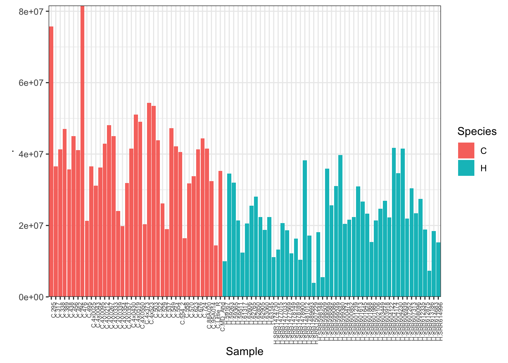
| Version | Author | Date |
|---|---|---|
| c3dbe5a | Benjmain Fair | 2019-06-19 |
cpm <- cpm(CombinedTable, log=TRUE, prior.count=0.5)
kable(cpm[1:10,1:10])| C.4x373 | C.95A014 | C.676 | C.554_2 | C.456 | C.503 | C.4x0043 | C.570 | C.4X0095 | C.4x523 | |
|---|---|---|---|---|---|---|---|---|---|---|
| ENSG00000273443 | -4.402683 | -4.402683 | -4.4026833 | -2.0666967 | -4.402683 | -4.402683 | -4.4026833 | -4.402683 | -2.772420 | -4.402683 |
| ENSG00000217801 | -1.659074 | -2.841283 | -0.6087941 | -4.4026833 | -4.402683 | -4.402683 | -0.5631552 | -2.198895 | -1.537341 | -3.016478 |
| ENSG00000237330 | -4.402683 | -4.402683 | -2.7496282 | -4.4026833 | -4.402683 | -4.402683 | -4.4026833 | -4.402683 | -4.402683 | -4.402683 |
| ENSG00000223823 | -4.402683 | -4.402683 | -4.4026833 | -4.4026833 | -4.402683 | -4.402683 | -4.4026833 | -4.402683 | -4.402683 | -4.402683 |
| ENSG00000207730 | -4.402683 | -4.402683 | -4.4026833 | -4.4026833 | -4.402683 | -4.402683 | -4.4026833 | -4.402683 | -4.402683 | -4.402683 |
| ENSG00000207607 | -4.402683 | -4.402683 | -4.4026833 | -2.8059958 | -4.402683 | -4.402683 | -4.4026833 | -4.402683 | -4.402683 | -4.402683 |
| ENSG00000198976 | -4.402683 | -4.402683 | -4.4026833 | -4.4026833 | -4.402683 | -4.402683 | -4.4026833 | -4.402683 | -4.402683 | -4.402683 |
| ENSG00000272141 | -2.140163 | -4.402683 | -4.4026833 | -4.4026833 | -4.402683 | -4.402683 | -4.4026833 | -4.402683 | -4.402683 | -4.402683 |
| ENSG00000205231 | -4.402683 | -4.402683 | -4.4026833 | -2.8059958 | -4.402683 | -4.402683 | -2.1382998 | -4.402683 | -4.402683 | -4.402683 |
| ENSG00000186891 | 2.031303 | -1.264262 | -0.2199978 | 0.1376718 | -1.624826 | -2.760991 | 1.5922154 | -2.198895 | -1.537341 | 1.315537 |
# Heatmap of correlation. Species segregate as expected.
SpeciesFactor <- colnames(cpm) %>% substr(1,1) %>% factor() %>% unclass() %>% as.character()
cor(cpm, method = c("spearman")) %>%
heatmap.2(trace="none", ColSideColors=SpeciesFactor)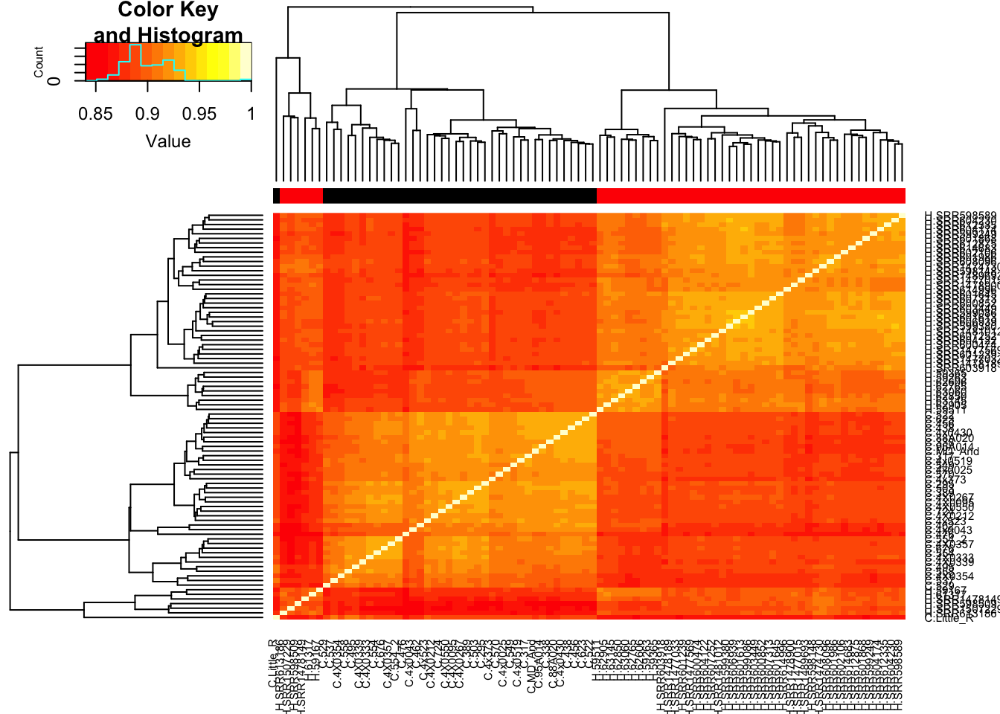
| Version | Author | Date |
|---|---|---|
| c3dbe5a | Benjmain Fair | 2019-06-19 |
Unsurprisingly, the samples with the lowest read depth in the human cohort are clear outliers. This might change once I filter out the more lowly expressed genes.
d0 <- DGEList(CombinedTable)
#Calculate normalization factors
d0 <- calcNormFactors(d0)
#Note: calcNormFactors doesn’t normalize the data, it just calculates normalization factors for use downstream.
#Filter low-expressed genes
cutoff <- 8
drop <- which(apply(cpm(d0), 1, max) < cutoff)
d <- d0[-drop,]
dim(d) # number of genes left[1] 13097 88plotMDS(d, col = as.numeric(SpeciesFactor))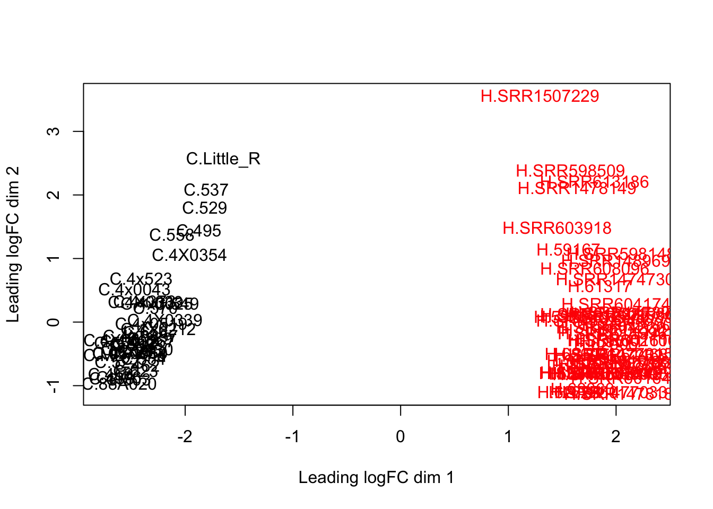
| Version | Author | Date |
|---|---|---|
| c3dbe5a | Benjmain Fair | 2019-06-19 |
plotMDS(d, col = as.numeric(SpeciesFactor), dim=c(3,4))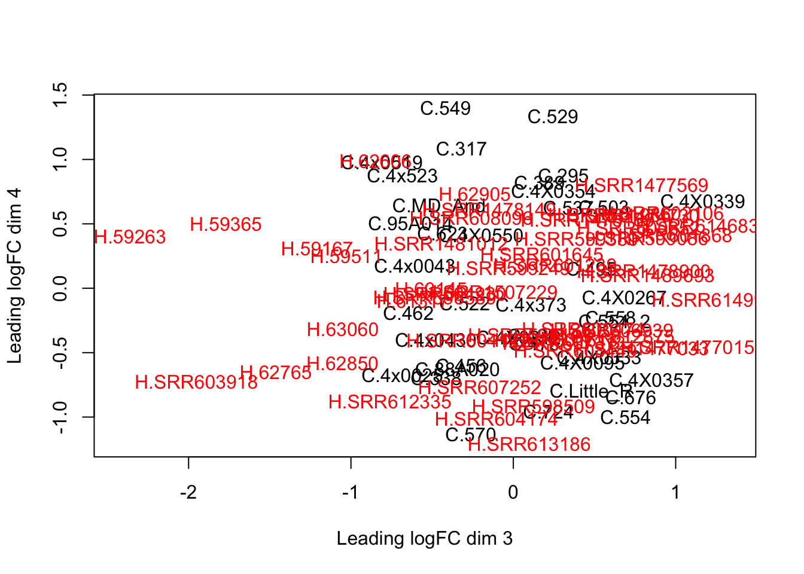
| Version | Author | Date |
|---|---|---|
| c3dbe5a | Benjmain Fair | 2019-06-19 |
cor(cpm(d, log=T, prior.count=0.5), method = c("spearman")) %>%
heatmap.2(trace="none", ColSideColors=SpeciesFactor)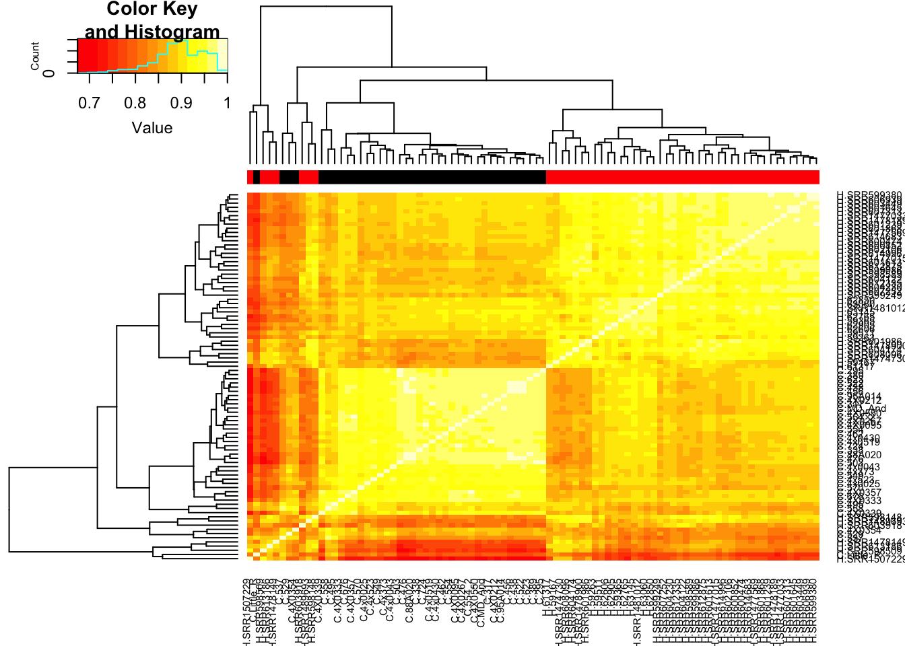
| Version | Author | Date |
|---|---|---|
| c3dbe5a | Benjmain Fair | 2019-06-19 |
mm <- model.matrix(~0 + SpeciesFactor)
y <- voom(d, mm, plot = T, normalize.method="cyclicloess")
| Version | Author | Date |
|---|---|---|
| c3dbe5a | Benjmain Fair | 2019-06-19 |
In fact some of these samples seemed to have gotten worse. I’ll just throw these out of future analysis.
HumanSamplesToDrop <- c("SRR1507229","SRR603918", "SRR1478149", "SRR598509", "SRR613186")
ChimpSamplesToDrop <- c("Little_R")Anway, now that voom calculated mean/variance relationship from count values, I will now normalize for gene length differences between species (Convert cpm to rpkm). As per the voom publication (Law et al 2014) log-cpm values output by voom can be converted to log-rpkm by subtracting the log2 gene length in kilobases. For this I will make a matrix of gene lengths based on chimp orthologous exon length and human orthologous exon lengths to subtract the correct length for each species from the count matrix output by voom.
rep.col<-function(x,n){
matrix(rep(x,each=n), ncol=n, byrow=TRUE)
}
GeneLengths <- inner_join(CountTableChimp[,c("C.Geneid", "C.Length")], CountTableHuman[,c("H.Geneid", "H.Length")], by=c("C.Geneid"="H.Geneid"))
head(kable(GeneLengths))[1] "C.Geneid C.Length H.Length"
[2] "---------------- --------- ---------"
[3] "ENSG00000273443 707 706"
[4] "ENSG00000217801 824 824"
[5] "ENSG00000237330 289 292"
[6] "ENSG00000223823 94 94"ggplot(GeneLengths, aes(x=log10(C.Length), y=log10(H.Length))) + geom_point()
| Version | Author | Date |
|---|---|---|
| c3dbe5a | Benjmain Fair | 2019-06-19 |
# accounting for the length differences probably will have negligble effect on results anyway. # Will probably calculate DE genes both ways (cpm and rpkm) to verify
GeneLengthMatrix <- cbind(
rep.col(log2(GeneLengths$C.Length/1000), length(CountTableChimp)-6),
rep.col(log2(GeneLengths$H.Length/1000), length(CountTableHuman)-6))
rownames(GeneLengthMatrix) <- GeneLengths$C.Geneid
kable(GeneLengthMatrix[1:10,1:10])| ENSG00000273443 | -0.5002179 | -0.5002179 | -0.5002179 | -0.5002179 | -0.5002179 | -0.5002179 | -0.5002179 | -0.5002179 | -0.5002179 | -0.5002179 |
| ENSG00000217801 | -0.2792838 | -0.2792838 | -0.2792838 | -0.2792838 | -0.2792838 | -0.2792838 | -0.2792838 | -0.2792838 | -0.2792838 | -0.2792838 |
| ENSG00000237330 | -1.7908586 | -1.7908586 | -1.7908586 | -1.7908586 | -1.7908586 | -1.7908586 | -1.7908586 | -1.7908586 | -1.7908586 | -1.7908586 |
| ENSG00000223823 | -3.4111954 | -3.4111954 | -3.4111954 | -3.4111954 | -3.4111954 | -3.4111954 | -3.4111954 | -3.4111954 | -3.4111954 | -3.4111954 |
| ENSG00000207730 | -3.3959287 | -3.3959287 | -3.3959287 | -3.3959287 | -3.3959287 | -3.3959287 | -3.3959287 | -3.3959287 | -3.3959287 | -3.3959287 |
| ENSG00000207607 | -3.4739312 | -3.4739312 | -3.4739312 | -3.4739312 | -3.4739312 | -3.4739312 | -3.4739312 | -3.4739312 | -3.4739312 | -3.4739312 |
| ENSG00000198976 | -3.5907449 | -3.5907449 | -3.5907449 | -3.5907449 | -3.5907449 | -3.5907449 | -3.5907449 | -3.5907449 | -3.5907449 | -3.5907449 |
| ENSG00000272141 | -0.0174171 | -0.0174171 | -0.0174171 | -0.0174171 | -0.0174171 | -0.0174171 | -0.0174171 | -0.0174171 | -0.0174171 | -0.0174171 |
| ENSG00000205231 | 0.3684890 | 0.3684890 | 0.3684890 | 0.3684890 | 0.3684890 | 0.3684890 | 0.3684890 | 0.3684890 | 0.3684890 | 0.3684890 |
| ENSG00000186891 | 0.4467856 | 0.4467856 | 0.4467856 | 0.4467856 | 0.4467856 | 0.4467856 | 0.4467856 | 0.4467856 | 0.4467856 | 0.4467856 |
#subtract gene log2(kb) from log2(cpm)
y$E <- y$E - GeneLengthMatrix[rownames(y$E),]
#Now do model fitting, significance testing
fit<- lmFit(y, mm)
plotSA(fit)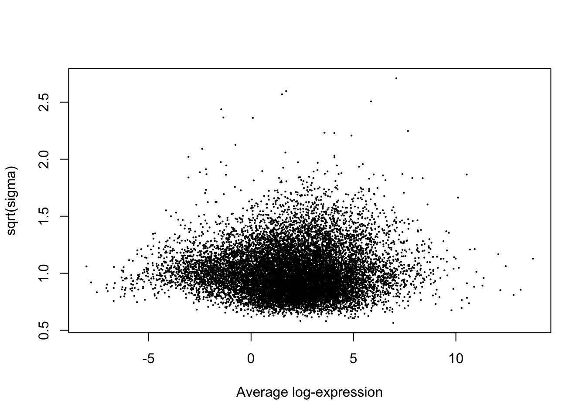
head(coef(fit)) SpeciesFactor1 SpeciesFactor2
ENSG00000186891 -0.5042645 -2.9843307
ENSG00000186827 2.1923203 1.5926387
ENSG00000078808 4.9196758 5.2185157
ENSG00000176022 3.0372329 2.8850147
ENSG00000184163 -0.1085559 -0.5281716
ENSG00000160087 2.4507578 2.5740626head(y$E[,1])ENSG00000186891 ENSG00000186827 ENSG00000078808 ENSG00000176022
1.9909430 3.8369592 4.6769123 2.9626243
ENSG00000184163 ENSG00000160087
0.4987694 2.4420370 contr <- makeContrasts(DE=SpeciesFactor1-SpeciesFactor2, levels = mm)
tmp <- contrasts.fit(fit, contrasts=contr)
FC.NullInterval <- log2(1.0)
True.efit <- treat(tmp, lfc = FC.NullInterval)
summary(decideTests(True.efit)) DE
Down 4402
NotSig 4279
Up 4416TrueResponse <- decideTests(True.efit)
plotMD(True.efit, column=1, zero.weights = F)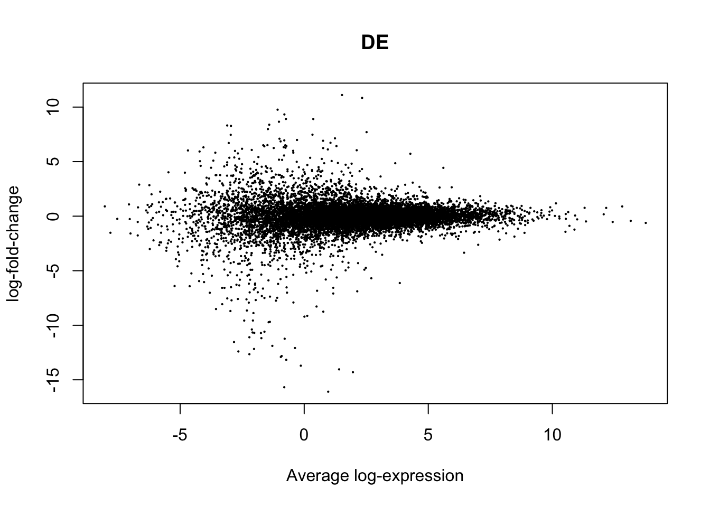
Ok, seems like the above workflow for identifying DE genes is set up reasonably… Now let’s repeat with less samples and see what changes. First, I will wrap all of the above analysis into a function with a sample size parameter:
DE.Subsampled <-function(ChimpCountTableFile, HumanCountTableFile, SubsampleSize, FC.NullInterval, drop, ChimpSampleDrop=NULL, HumanSampleDrop=NULL)
#if SubsampleSize parameter == 0, use full table, otherwise, subsample from it
{
FullChimpData <- read.table(gzfile(ChimpCountTableFile), header=T, check.names=FALSE, skip=1)
FullHumanData <- read.table(gzfile(HumanCountTableFile), header=T, check.names=FALSE, skip=1)
if (!is.null(ChimpSampleDrop)){
FullChimpData <- FullChimpData %>% dplyr::select(-ChimpSampleDrop)
}
if (!is.null(HumanSampleDrop)){
FullHumanData <- FullHumanData %>% dplyr::select(-HumanSampleDrop)
}
if (SubsampleSize==0){
CountTableChimp <- FullChimpData
colnames(CountTableChimp) <- paste0("C.", colnames(CountTableChimp))
CountTableHuman <- FullHumanData
colnames(CountTableHuman) <- paste0("H.", colnames(CountTableHuman))
} else {
CountTableChimp <- FullChimpData %>% dplyr::select(c(1:6, sample(7:length(FullChimpData), SubsampleSize)))
colnames(CountTableChimp) <- paste0("C.", colnames(CountTableChimp))
CountTableHuman <- FullHumanData %>% dplyr::select(c(1:6, sample(7:length(FullHumanData), SubsampleSize)))
colnames(CountTableHuman) <- paste0("H.", colnames(CountTableHuman))
}
CombinedTable <- inner_join(CountTableChimp[,c(1,7:length(CountTableChimp))], CountTableHuman[,c(1,7:length(CountTableHuman))], by=c("C.Geneid"="H.Geneid")) %>%
column_to_rownames("C.Geneid") %>% as.matrix()
SpeciesFactor <- colnames(CombinedTable) %>% substr(1,1) %>% factor() %>% unclass() %>% as.character()
d0 <- DGEList(CombinedTable)
d0 <- calcNormFactors(d0)
d <- d0[-drop,]
mm <- model.matrix(~0 + SpeciesFactor)
y <- voom(d, mm, normalize.method="cyclicloess", plot=F)
GeneLengths <- inner_join(CountTableChimp[,c("C.Geneid", "C.Length")], CountTableHuman[,c("H.Geneid", "H.Length")], by=c("C.Geneid"="H.Geneid"))
GeneLengthMatrix <- cbind(
rep.col(log2(GeneLengths$C.Length/1000), length(CountTableChimp)-6),
rep.col(log2(GeneLengths$H.Length/1000), length(CountTableHuman)-6))
rownames(GeneLengthMatrix) <- GeneLengths$C.Geneid
y$E <- y$E - GeneLengthMatrix[rownames(y$E),]
fit<- lmFit(y, mm)
contr <- makeContrasts(DE=SpeciesFactor1-SpeciesFactor2, levels = mm)
tmp <- contrasts.fit(fit, contrasts=contr)
efit <- treat(tmp, lfc = FC.NullInterval)
return(efit)
}Now that I have a function to do all of the DE gene analysis, use the function with a smaller sample size and check results:
#20 samples
Subsampled.DE.results <- DE.Subsampled(CountTableChimpFile,
CountTableHumanFile,
20, 0, drop)
summary(decideTests(Subsampled.DE.results)) DE
Down 3848
NotSig 5494
Up 3755RocCurveData <- coords(roc(response=as.vector(abs(TrueResponse)), predictor=Subsampled.DE.results$p.value, plot=F))Setting levels: control = 0, case = 1Warning in roc.default(response = as.vector(abs(TrueResponse)), predictor
= Subsampled.DE.results$p.value, : Deprecated use a matrix as predictor.
Unexpected results may be produced, please pass a numeric vector.Setting direction: controls > casesWarning in coords.roc(roc(response = as.vector(abs(TrueResponse)),
predictor = Subsampled.DE.results$p.value, : An upcoming version of pROC
will set the 'transpose' argument to FALSE by default. Set transpose =
TRUE explicitly to keep the current behavior, or transpose = FALSE to
adopt the new one and silence this warning. Type help(coords_transpose) for
additional information.plot(1-RocCurveData["specificity",], RocCurveData["sensitivity",])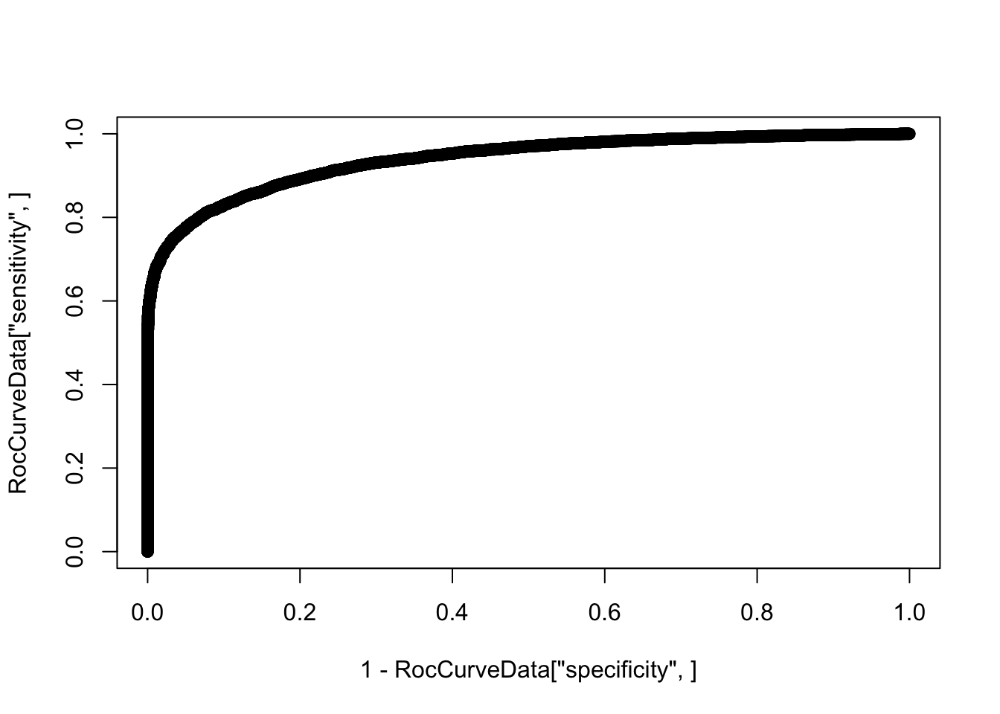
| Version | Author | Date |
|---|---|---|
| c3dbe5a | Benjmain Fair | 2019-06-19 |
SubSampledResponse <- decideTests(Subsampled.DE.results)
# distribution of effect sizes for true positives
hist(abs(True.efit$coefficients[TrueResponse==SubSampledResponse & SubSampledResponse!=0]), main="|effect size| of true positives")
| Version | Author | Date |
|---|---|---|
| c3dbe5a | Benjmain Fair | 2019-06-19 |
median(abs(True.efit$coefficients[TrueResponse==SubSampledResponse & SubSampledResponse!=0]))[1] 0.7031364#5 samples
Subsampled.DE.results <- DE.Subsampled(CountTableChimpFile,
CountTableHumanFile,
5, 0, drop)
summary(decideTests(Subsampled.DE.results)) DE
Down 1538
NotSig 9911
Up 1648RocCurveData <- coords(roc(response=as.vector(abs(TrueResponse)), predictor=Subsampled.DE.results$p.value, plot=F))Setting levels: control = 0, case = 1Warning in roc.default(response = as.vector(abs(TrueResponse)), predictor
= Subsampled.DE.results$p.value, : Deprecated use a matrix as predictor.
Unexpected results may be produced, please pass a numeric vector.Setting direction: controls > casesWarning in coords.roc(roc(response = as.vector(abs(TrueResponse)),
predictor = Subsampled.DE.results$p.value, : An upcoming version of pROC
will set the 'transpose' argument to FALSE by default. Set transpose =
TRUE explicitly to keep the current behavior, or transpose = FALSE to
adopt the new one and silence this warning. Type help(coords_transpose) for
additional information.plot(1-RocCurveData["specificity",], RocCurveData["sensitivity",])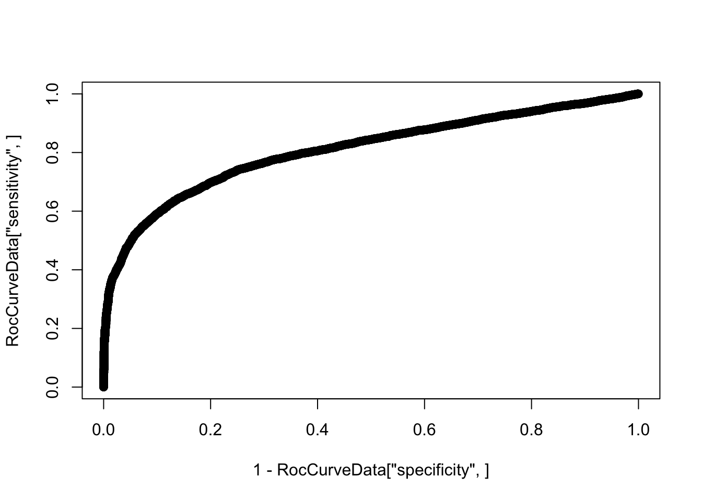
| Version | Author | Date |
|---|---|---|
| c3dbe5a | Benjmain Fair | 2019-06-19 |
SubSampledResponse <- decideTests(Subsampled.DE.results)
# distribution of effect sizes for true positives
hist(abs(True.efit$coefficients[TrueResponse==SubSampledResponse & SubSampledResponse!=0]), main="|effect size| of true positives")
| Version | Author | Date |
|---|---|---|
| c3dbe5a | Benjmain Fair | 2019-06-19 |
median(abs(True.efit$coefficients[TrueResponse==SubSampledResponse & SubSampledResponse!=0]))[1] 1.014835Now I will systematically do this for varying sample sizes and make some final plots
#Note there is some randomness in subsampling samples. So much so that sometimes it effects results wherein 4 samples might yield more DE genes than 2 if you get unluck and pick "bad" samples in the 4
set.seed(1)
#Interval for null hypothesis
FC.NullInterval <- log2(1.0)
#True results are those using all samples
True.efit <- DE.Subsampled(CountTableChimpFile,
CountTableHumanFile,
0, FC.NullInterval, drop, ChimpSampleDrop=ChimpSamplesToDrop, HumanSampleDrop = HumanSamplesToDrop)
SampleSizes <- c(2,4,8,16,24,32,38)
FDRLevels <- c(0.01, 0.05, 0.1)
RocCurveDataToPlot <- data.frame()
DEGeneCountToPlot <- matrix(nrow=length(SampleSizes), ncol=length(FDRLevels))
rownames(DEGeneCountToPlot) <- SampleSizes
EffectSizesToPlot <- data.frame()
for (i in seq_along(SampleSizes)){
paste0("processing ", SampleSizes[i])
Results <- DE.Subsampled(CountTableChimpFile,
CountTableHumanFile,
SampleSizes[i], FC.NullInterval, drop, ChimpSampleDrop=ChimpSamplesToDrop, HumanSampleDrop = HumanSamplesToDrop)
RocCurveData <- as.data.frame(coords(roc(response=as.vector(abs(TrueResponse)), quiet=T, predictor=as.numeric(Results$p.value), plot=F), transpose=F))
RocCurveData$samplesize <- SampleSizes[i]
RocCurveDataToPlot <- rbind(RocCurveDataToPlot, RocCurveData)
for (j in seq_along(FDRLevels)){
SubSampledResponse <- decideTests(Results, p.value=FDRLevels[j])
DEGeneCountToPlot[i,j] <- sum(table(SubSampledResponse)[c("-1","1")])
if (length(table(TrueResponse==SubSampledResponse & SubSampledResponse!=0)) > 1){
EffectSizes.df <-data.frame(EffectSizes=abs(True.efit$coefficients[TrueResponse==SubSampledResponse & SubSampledResponse!=0]), FDR=FDRLevels[j], SampleSize=SampleSizes[i])
EffectSizesToPlot <- rbind(EffectSizesToPlot, EffectSizes.df)
}
}
}
ggplot(RocCurveDataToPlot, aes(x=1-specificity, y=sensitivity, color=factor(samplesize))) +
geom_line() +
theme_bw()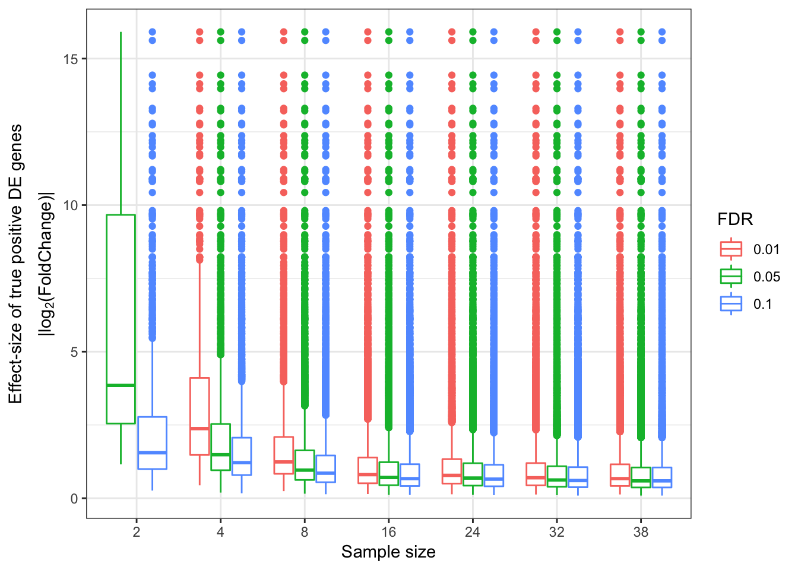
DEGeneCountToPlot.df<-as.data.frame(DEGeneCountToPlot)
colnames(DEGeneCountToPlot.df) <- FDRLevels
DEGeneCountToPlot.df$SampleSize <- rownames(DEGeneCountToPlot.df)
DEGeneCountToPlot.df$SampleSize[1] "2" "4" "8" "16" "24" "32" "38"DEGeneCountToPlot.df[is.na(DEGeneCountToPlot.df)] <- 0
DEGeneCountToPlot.df %>% melt() %>%
dplyr::rename(Number.DE.genes=value, FDR=variable) %>%
ggplot(aes(x=as.numeric(SampleSize), y=Number.DE.genes, color=FDR)) +
geom_line() +
theme_bw()Using SampleSize as id variablesggplot(EffectSizesToPlot, aes(x=factor(SampleSize), y=EffectSizes, color=factor(FDR))) +
# geom_violin()
geom_boxplot() +
ylab("Effect Size of True positive DE genes\n|log2(FC)|") +
# scale_y_continuous(limits=c(0,5))
theme_bw()# ggplot(EffectSizesToPlot, aes(x=as.numeric(SampleSize), y=median(EffectSizes), color=factor(FDR), group=factor(FDR))) +
# geom_line() +
# # scale_y_continuous(limits=c(0,5))
# theme_bw()
data.frame(coefficients=as.numeric(True.efit$coefficients), pval=as.numeric(True.efit$p.value), signif=decideTests(True.efit)) %>%
ggplot(aes(x=coefficients, y=-log10(pval), color=factor(DE))) +
geom_point() +
scale_x_continuous(limits=c(-5,5))Warning: Removed 116 rows containing missing values (geom_point).
I probably also want to explore how read depth plays into this, especially considering some samples were much more sparse than others. Here I’ll try to write a function to subsample without replacement the read counts from the original count table.
sample_species <- function(counts,n) {
num_species <- length(counts)
total_count <- sum(counts)
samples <- sample(1:total_count,n,replace=F)
samples <- samples[order(samples)]
result <- array(0,num_species)
total <- 0
for (i in 1:num_species) {
result[i] <- length(which(samples > total & samples <= total+counts[i]))
total <- total+counts[i]
}
return(result)
# return(apply(t(counts),1,sample_species,1500) )
}
sample_count_table <- function(counts, n){
return(apply(t(counts),1,sample_species,n) )
}
A<- sample_count_table(CombinedTable,2200000)This is still a work in progress… It seems that sampling without replcement from a large count table actually takes an unreasonably long time (and probably uses a lot of memory)… Sampling without replacement could be faster in theory, but I’m not sure if that is still reasonable. There are some third party packages out there that do this, maybe I will try them out. Though, I don’t see any that let you pick a number of reads to subsample as opposed to a proportion of reads to subsample (in other words, it wouldn’t be easy to normalize read depth across samples). Maybe it will actually just be easier to realign everything at various read depths and make new count table files for each read depth if I want to incorporate normalizing and adjusting read depths into this analysis.
Update: What I turned out doing is sampling from the original alignment bam file to varying depths, normalizing such that each sample has an equal number of aligned reads. Then count tables were generated (one table for chimp, one for human), and the block of code that makes roc curves and other plots for different numbers of samples was repeated below using those smaller count tables (but still using the full count tabe as to determine “true” responses)
###25M reads for each sample
RocCurveDataToPlot <- data.frame()
DEGeneCountToPlot <- matrix(nrow=length(SampleSizes), ncol=length(FDRLevels))
rownames(DEGeneCountToPlot) <- SampleSizes
EffectSizesToPlot <- data.frame()
ReadDepthControlledChimpCountFile <- "../output/PowerAnalysisCountTable.Chimp.25000000.subread.txt.gz"
ReadDepthControlledHumanCountFile <- "../output/PowerAnalysisCountTable.Human.25000000.subread.txt.gz"
for (i in seq_along(SampleSizes)){
paste0("processing ", SampleSizes[i])
Results <- DE.Subsampled(ReadDepthControlledChimpCountFile,
ReadDepthControlledHumanCountFile,
SampleSizes[i], FC.NullInterval, drop, ChimpSampleDrop=ChimpSamplesToDrop, HumanSampleDrop = HumanSamplesToDrop)
RocCurveData <- as.data.frame(coords(roc(response=as.vector(abs(TrueResponse)), quiet=T, predictor=as.numeric(Results$p.value), plot=F), transpose=F))
RocCurveData$samplesize <- SampleSizes[i]
RocCurveDataToPlot <- rbind(RocCurveDataToPlot, RocCurveData)
for (j in seq_along(FDRLevels)){
SubSampledResponse <- decideTests(Results, p.value=FDRLevels[j])
DEGeneCountToPlot[i,j] <- sum(table(SubSampledResponse)[c("-1","1")])
if (length(table(TrueResponse==SubSampledResponse & SubSampledResponse!=0)) > 1){
EffectSizes.df <-data.frame(EffectSizes=abs(True.efit$coefficients[TrueResponse==SubSampledResponse & SubSampledResponse!=0]), FDR=FDRLevels[j], SampleSize=SampleSizes[i])
EffectSizesToPlot <- rbind(EffectSizesToPlot, EffectSizes.df)
}
}
}
ggplot(RocCurveDataToPlot, aes(x=1-specificity, y=sensitivity, color=factor(samplesize))) +
geom_line() +
theme_bw()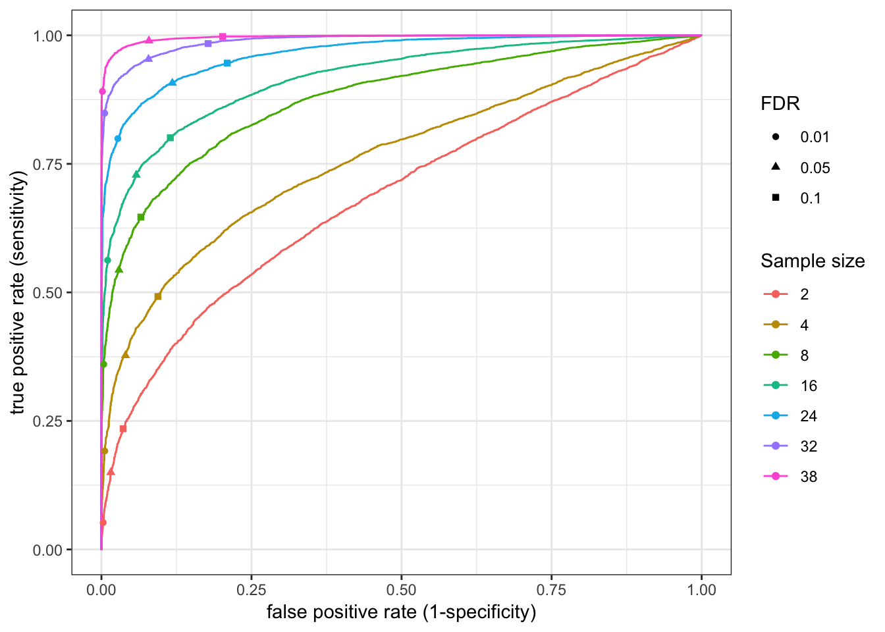
DEGeneCountToPlot.df<-as.data.frame(DEGeneCountToPlot)
colnames(DEGeneCountToPlot.df) <- FDRLevels
DEGeneCountToPlot.df$SampleSize <- rownames(DEGeneCountToPlot.df)
DEGeneCountToPlot.df$SampleSize[1] "2" "4" "8" "16" "24" "32" "38"DEGeneCountToPlot.df[is.na(DEGeneCountToPlot.df)] <- 0
DEGeneCountToPlot.df %>% melt() %>%
dplyr::rename(Number.DE.genes=value, FDR=variable) %>%
ggplot(aes(x=as.numeric(SampleSize), y=Number.DE.genes, color=FDR)) +
geom_line() +
theme_bw()Using SampleSize as id variables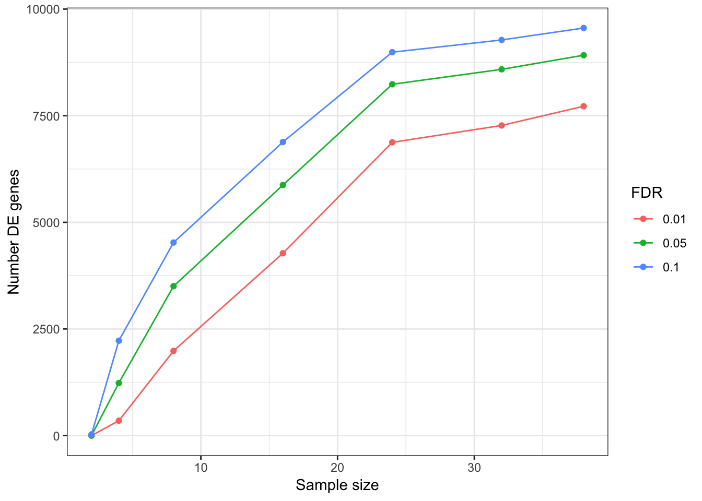
ggplot(EffectSizesToPlot, aes(x=factor(SampleSize), y=EffectSizes, color=factor(FDR))) +
# geom_violin()
geom_boxplot() +
ylab("Effect Size of True positive DE genes\n|log2(FC)|") +
# scale_y_continuous(limits=c(0,5))
theme_bw()###5M reads for each sample
RocCurveDataToPlot <- data.frame()
DEGeneCountToPlot <- matrix(nrow=length(SampleSizes), ncol=length(FDRLevels))
rownames(DEGeneCountToPlot) <- SampleSizes
EffectSizesToPlot <- data.frame()
ReadDepthControlledChimpCountFile <- "../output/PowerAnalysisCountTable.Chimp.10000000.subread.txt.gz"
ReadDepthControlledHumanCountFile <- "../output/PowerAnalysisCountTable.Human.10000000.subread.txt.gz"
for (i in seq_along(SampleSizes)){
paste0("processing ", SampleSizes[i])
Results <- DE.Subsampled(ReadDepthControlledChimpCountFile,
ReadDepthControlledHumanCountFile,
SampleSizes[i], FC.NullInterval, drop, ChimpSampleDrop=ChimpSamplesToDrop, HumanSampleDrop = HumanSamplesToDrop)
RocCurveData <- as.data.frame(coords(roc(response=as.vector(abs(TrueResponse)), quiet=T, predictor=as.numeric(Results$p.value), plot=F), transpose=F))
RocCurveData$samplesize <- SampleSizes[i]
RocCurveDataToPlot <- rbind(RocCurveDataToPlot, RocCurveData)
for (j in seq_along(FDRLevels)){
SubSampledResponse <- decideTests(Results, p.value=FDRLevels[j])
DEGeneCountToPlot[i,j] <- sum(table(SubSampledResponse)[c("-1","1")])
if (length(table(TrueResponse==SubSampledResponse & SubSampledResponse!=0)) > 1){
EffectSizes.df <-data.frame(EffectSizes=abs(True.efit$coefficients[TrueResponse==SubSampledResponse & SubSampledResponse!=0]), FDR=FDRLevels[j], SampleSize=SampleSizes[i])
EffectSizesToPlot <- rbind(EffectSizesToPlot, EffectSizes.df)
}
}
}
ggplot(RocCurveDataToPlot, aes(x=1-specificity, y=sensitivity, color=factor(samplesize))) +
geom_line() +
theme_bw()DEGeneCountToPlot.df<-as.data.frame(DEGeneCountToPlot)
colnames(DEGeneCountToPlot.df) <- FDRLevels
DEGeneCountToPlot.df$SampleSize <- rownames(DEGeneCountToPlot.df)
DEGeneCountToPlot.df$SampleSize[1] "2" "4" "8" "16" "24" "32" "38"DEGeneCountToPlot.df[is.na(DEGeneCountToPlot.df)] <- 0
DEGeneCountToPlot.df %>% melt() %>%
dplyr::rename(Number.DE.genes=value, FDR=variable) %>%
ggplot(aes(x=as.numeric(SampleSize), y=Number.DE.genes, color=FDR)) +
geom_line() +
theme_bw()Using SampleSize as id variables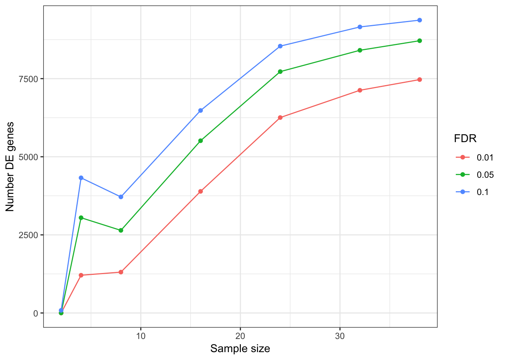
ggplot(EffectSizesToPlot, aes(x=factor(SampleSize), y=EffectSizes, color=factor(FDR))) +
# geom_violin()
geom_boxplot() +
ylab("Effect Size of True positive DE genes\n|log2(FC)|") +
# scale_y_continuous(limits=c(0,5))
theme_bw()
sessionInfo()R version 3.5.1 (2018-07-02)
Platform: x86_64-apple-darwin15.6.0 (64-bit)
Running under: macOS 10.14
Matrix products: default
BLAS: /Library/Frameworks/R.framework/Versions/3.5/Resources/lib/libRblas.0.dylib
LAPACK: /Library/Frameworks/R.framework/Versions/3.5/Resources/lib/libRlapack.dylib
locale:
[1] en_US.UTF-8/en_US.UTF-8/en_US.UTF-8/C/en_US.UTF-8/en_US.UTF-8
attached base packages:
[1] stats graphics grDevices utils datasets methods base
other attached packages:
[1] gridExtra_2.3 reshape2_1.4.3 qvalue_2.14.1 pROC_1.15.0
[5] gplots_3.0.1.1 corrplot_0.84 edgeR_3.24.3 limma_3.38.3
[9] knitr_1.23 forcats_0.4.0 stringr_1.4.0 dplyr_0.8.1
[13] purrr_0.3.2 readr_1.3.1 tidyr_0.8.3 tibble_2.1.3
[17] ggplot2_3.1.1 tidyverse_1.2.1
loaded via a namespace (and not attached):
[1] Rcpp_1.0.1 locfit_1.5-9.1 lubridate_1.7.4
[4] lattice_0.20-38 gtools_3.8.1 assertthat_0.2.1
[7] rprojroot_1.3-2 digest_0.6.19 R6_2.4.0
[10] cellranger_1.1.0 plyr_1.8.4 backports_1.1.4
[13] evaluate_0.14 httr_1.4.0 highr_0.8
[16] pillar_1.4.1 rlang_0.3.4 lazyeval_0.2.2
[19] readxl_1.3.1 rstudioapi_0.10 gdata_2.18.0
[22] whisker_0.3-2 rmarkdown_1.13 labeling_0.3
[25] splines_3.5.1 munsell_0.5.0 broom_0.5.2
[28] compiler_3.5.1 modelr_0.1.4 xfun_0.7
[31] pkgconfig_2.0.2 htmltools_0.3.6 tidyselect_0.2.5
[34] workflowr_1.4.0 crayon_1.3.4 withr_2.1.2
[37] bitops_1.0-6 grid_3.5.1 nlme_3.1-140
[40] jsonlite_1.6 gtable_0.3.0 git2r_0.25.2
[43] magrittr_1.5 scales_1.0.0 KernSmooth_2.23-15
[46] cli_1.1.0 stringi_1.4.3 fs_1.3.1
[49] xml2_1.2.0 generics_0.0.2 tools_3.5.1
[52] glue_1.3.1 hms_0.4.2 yaml_2.2.0
[55] colorspace_1.4-1 caTools_1.17.1.2 rvest_0.3.4
[58] haven_2.1.0